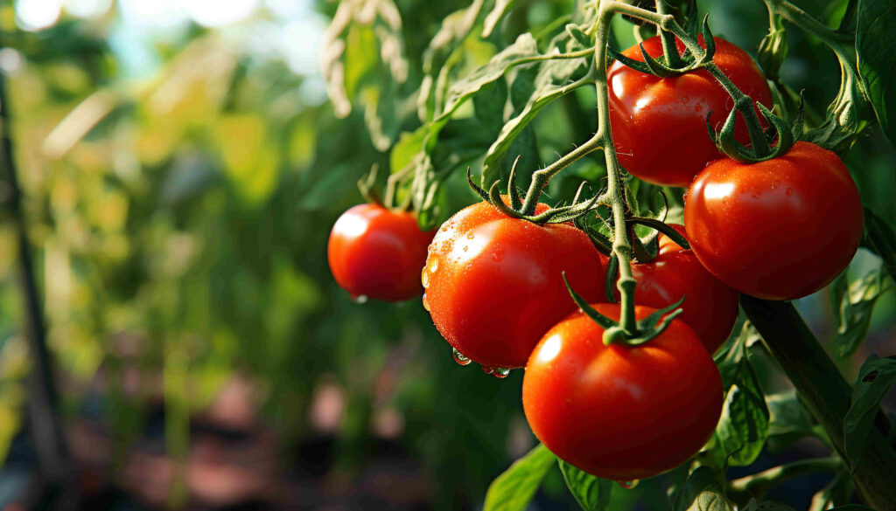
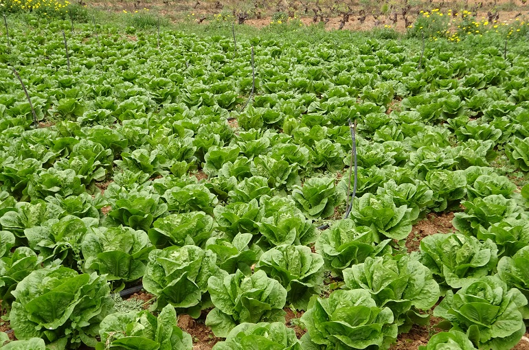
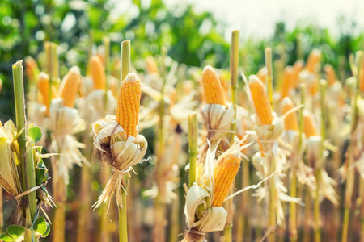

Tomate

El tomate es un cultivo sensible a enfermedades, se recomienda rotación de cultivos y uso de fertilizantes orgánicos.
Información para producir cuidando el suelo y el agua
Seleccíona un cultivo para conocer prácticas recomendadas

El tomate es un cultivo sensible a enfermedades, se recomienda rotación de cultivos y uso de fertilizantes orgánicos.

La lechuga es un cultivo que requiere suelos bien drenados, se recomienda rotación de cultivos y uso de fertilizantes orgánicos.

El maíz es un cultivo importante en la región, se recomienda rotación de cultivos y uso de fertilizantes orgánicos.
Selecciona un cultivo para ver recomendaciones